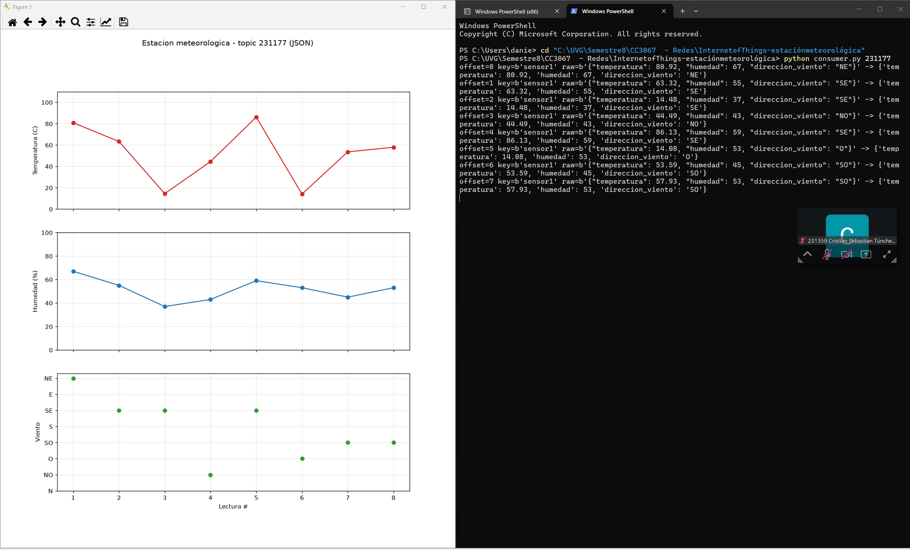
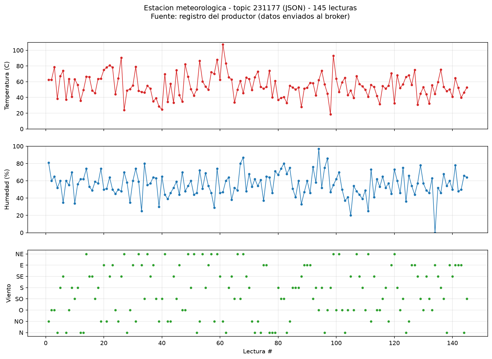
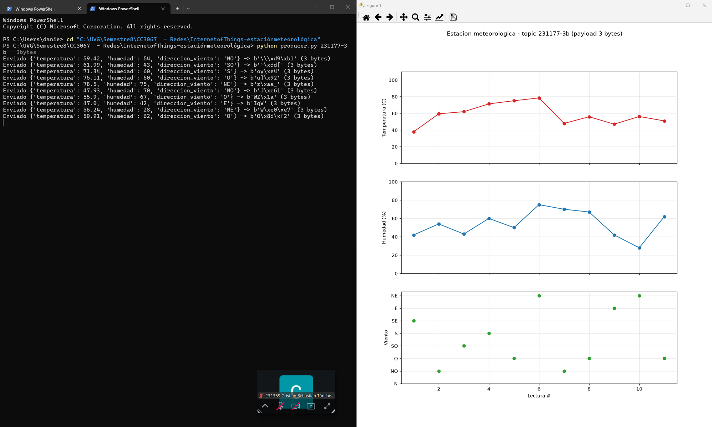
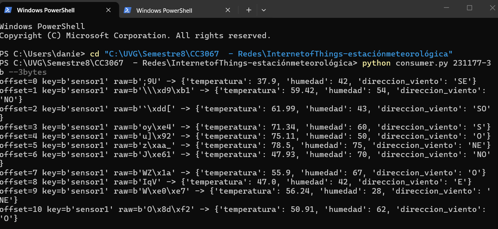

Estación meteorológica IoT
Un nodo de sensores simulado que publica su telemetría en un broker Kafka en el Edge, y un consumidor que la grafica en vivo.
Daniel Chet231177
Cristian Túnchez231359
Del sensor a la gráfica, pasando por el Edge.
291
lecturas enviadas en una hora
15–30 s
entre cada envío
2
topics: 231177 y 231177-3b
3 bytes
por mensaje con el payload restringido
Sensores simulados
temperatura, humedad, viento
Producer
JSON o 3 bytes, key sensor1
Broker Kafka
161.35.11.141:9092
SASL_PLAINTEXT · PLAIN
Consumer
lee el topic desde el inicio
Gráfica en vivo
matplotlib
Python 3 con kafka-python y matplotlib. Código en github.com/Dcextrim/CC3067-EstacionMeteorologica-IoT-
Los datos salen de una normal centrada en 55.
| Temperatura · float de 2 decimales | [0, 110.00] °C |
| Humedad relativa · entero | [0, 100] % |
| Dirección del viento · uniforme | N NO O SO S SE E NE |
JSON define cómo se ven los datos, no cómo viajan.
A qué capa pertenece JSON/SOAP y por qué?
Capa 6, presentación. JSON y SOAP (XML) definen la sintaxis y la representación de los datos: cómo se serializa la lectura a texto y cómo se vuelve a interpretar del otro lado. No dependen de cómo se transportan los bytes, eso lo resuelven TCP (capa 4) e IP (capa 3).
SOAP además es un protocolo de mensajería que viaja sobre HTTP, por eso a veces se ubica en la capa 7, aplicación. En el modelo TCP/IP ambos quedan dentro de la capa de aplicación.
Qué beneficios tiene usar JSON/SOAP?
- Independiente del lenguaje: un producer en Python y un consumer en Java o JavaScript entienden el mismo mensaje.
- Autodescriptivo: cada valor lleva su nombre, el mensaje se lee sin conocer el código.
- Extensible: se puede agregar un campo nuevo sin romper a los consumidores existentes.
- Menos frágil: no depende de posiciones fijas ni de tamaños de bytes.
- Herramientas listas: todos los lenguajes tienen librerías, y SOAP permite validar contra un esquema (XSD).
El producer publica una lectura cada 15 a 30 segundos.
231177
el carné como topic, para no cruzar datos con otras parejas
sensor1
la misma key manda todos los mensajes a la misma partición y conserva su orden
Ctrl+C
el dispositivo corre sin parar hasta que se interrumpe, y cierra la conexión al salir
La gráfica se redibuja con cada mensaje que llega.

El consumer usa los mismos parámetros de autenticación. Con earliest y sin guardar el avance, cada vez que se abre muestra todo el historial del topic y luego sigue con los datos nuevos.
La consola imprime el offset, la key, los bytes recibidos y el JSON ya interpretado.

Con más datos se ve la distribución.
Los valores oscilan alrededor de 55 y casi nunca se acercan a los extremos, como se espera de una normal con desviación 15.
Esta gráfica se armó con el registro de lo que el producer envió, no con una captura del consumer: el servidor Kafka cerró a las 21:30 y ya no se pudo volver a consumir el historial completo.
Pub/Sub desacopla, pero pide infraestructura.
Qué ventajas y desventajas tiene?
- Ventaja · desacople: el sensor no sabe quién lo consume. Se pueden agregar consumidores sin tocar el producer.
- Ventaja · persistencia: el broker guarda los mensajes, así que un consumer nuevo puede releer todo el historial (lo usamos con earliest).
- Ventaja · escala: los topics se particionan y replican entre brokers, con alta disponibilidad.
- Desventaja · punto central: si el broker cae, nadie publica ni consume. Lo vivimos cuando el servidor cerró a las 21:30.
- Desventaja · peso: Kafka necesita un servidor dedicado y su protocolo agrega más bytes de cabecera que nuestro payload de 3 bytes.
- Desventaja · complejidad: grupos, offsets y autenticación. Un offset guardado nos impedía ver el historial al reabrir el consumer.
Para qué aplicaciones tiene sentido Kafka y para cuáles no?
Sí tiene sentido:
- Telemetría IoT agregada en un gateway o Edge, con muchos sensores publicando sin parar.
- Logs, métricas y clics de sitios web en tiempo real.
- Pipelines de datos y microservicios que reaccionan a eventos.
No tiene sentido:
- Dentro del propio sensor con pocos recursos o batería: ahí conviene MQTT o CoAP.
- Pedido y respuesta inmediata, como una API REST o un login.
- Sistemas pequeños con pocos mensajes, donde una cola simple (RabbitMQ) o una base de datos bastan.
Toda la lectura cabe en 24 bits.
62 → 3 bytes
el mismo mensaje en JSON y codificado, 95% menos
11000 < 16384
110.00 × 100 cabe en 214, sin perder decimales
146 de 146
payloads enviados que se decodifican a la lectura original
Mismo envío, consumo y gráfica, ahora con 3 bytes.


Cuando cada bit cuenta.
Qué complejidades introduce un payload restringido?
Hay que diseñar un formato binario propio: producer y consumer deben conocer la posición exacta de cada bit, y cualquier cambio rompe a los dos. El mensaje deja de ser legible (b'IqV'), no queda espacio para metadatos como hora, id del sensor o una verificación de errores, y hay que validar rangos porque un valor fuera de rango invade los bits del campo vecino.
Cómo hacemos que la temperatura quepa en 14 bits?
Con punto fijo: se multiplica por 100 y se envía como entero. El máximo, 110.00, se vuelve 11000, menor que 214 = 16384. Al recibir se divide entre 100 y se recuperan los dos decimales sin pérdida.
Y si la humedad fuera float con un decimal?
De 0.0 a 100.0 por 10 da 1001 valores, que necesitan 10 bits. 14 + 10 + 3 = 27 bits, ya no cabe. Habría que ceder precisión: por ejemplo, temperatura con un solo decimal (1100 valores, 11 bits) da 11 + 10 + 3 = 24 bits exactos. Otras opciones: mantener la humedad entera, o enviar los campos en mensajes alternos.
Qué herramientas de Kafka ayudarían con restricciones más fuertes?
compression.type (gzip, lz4, zstd) junto con linger.ms y batch.size para comprimir lotes de lecturas. Usar la key y el timestamp propio del record para no repetir id ni hora en el payload. Avro o Protobuf con Schema Registry para mensajes binarios con el esquema fuera del mensaje. Y Kafka Streams en el Edge para enviar promedios en vez de cada lectura.
El formato se diseña según la red.
Kafka desacopla al sensor de quien lo consume, y guarda el historial para releerlo.
JSON es cómodo y flexible, pero ocupa 62 bytes por lectura.
Con punto fijo y campos de bits, la misma lectura cabe en 3 bytes sin perder precisión.
Repositorio. github.com/Dcextrim/CC3067-EstacionMeteorologica-IoT-
Gracias. ¿Preguntas?
CC3067 Redes · Universidad del Valle de Guatemala